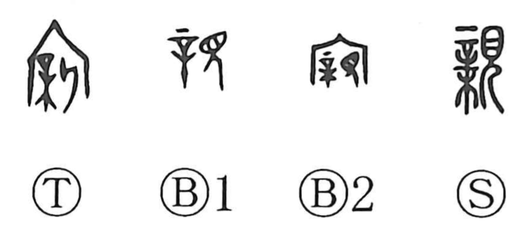

親

Kun: oya, shitashii, shitashimu, mizukara | On: shin
parent ・ relative ・ intimate ・ familiar ・ oneself
Explanation
Shirakawa reads 親 as a compound of 辛, 木, and 見. 辛 is a large handled needle used in a casting rite to choose a tree (木) from which a mortuary tablet would be made; together these form the left element, evoking the freshly cut wood of a new tablet. 見 shows the act of looking, and the whole depicts bowing in reverence while gazing at that newly made tablet. In bronze inscriptions a variant appears with 宀, the roof of an ancestral mausoleum, making the setting explicit. Because the “new tablets” in such halls commonly commemorated one’s father and mother, the character came to mean parent, and by extension one’s own kin and those close or familiar to oneself, even carrying the sense of oneself.